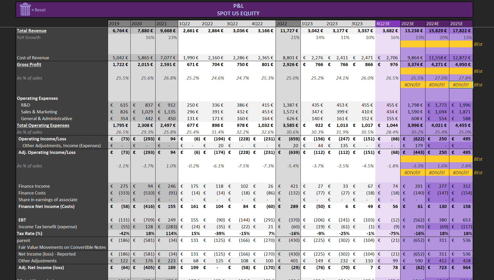
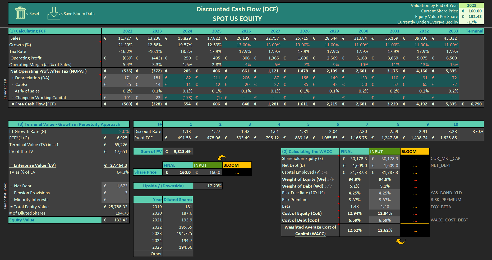
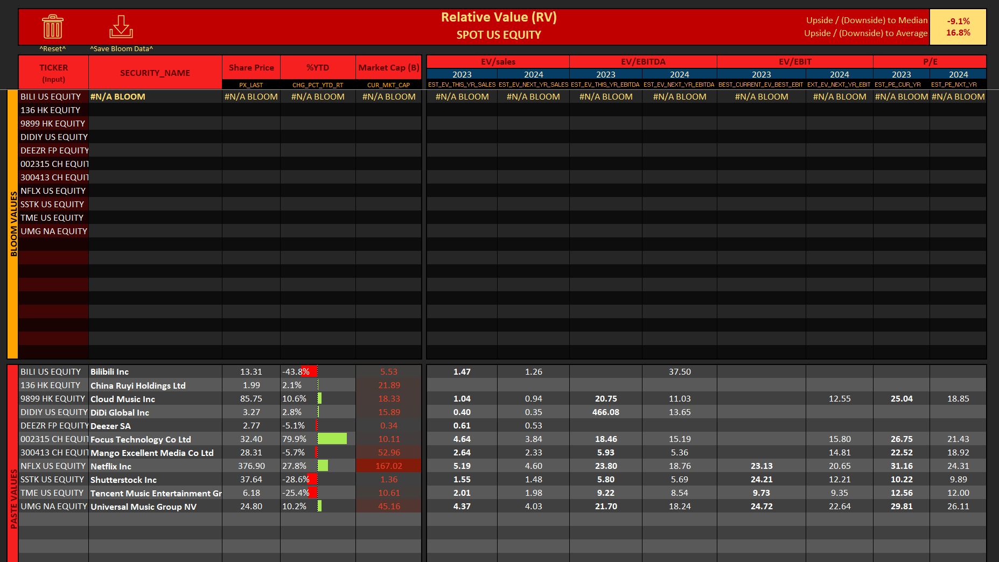
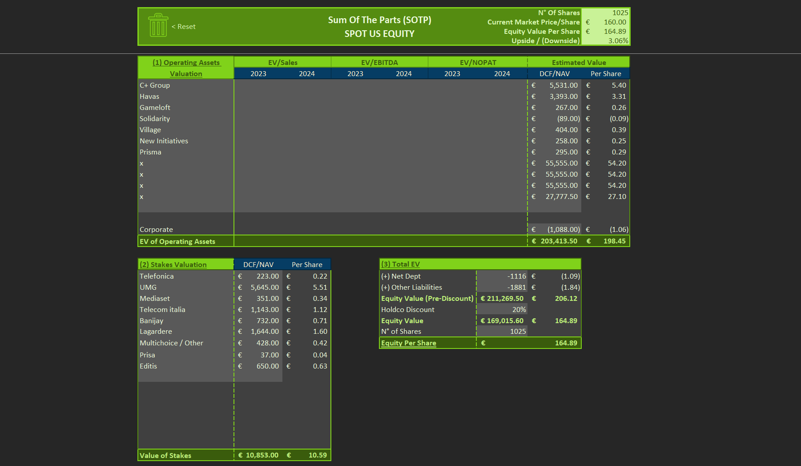
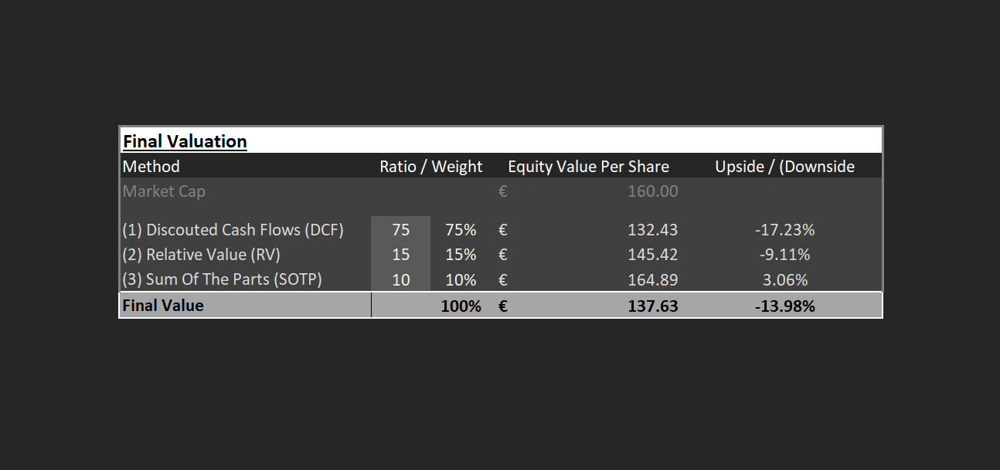

A self-directed equity research tool built from scratch in Excel and VBA, wired to Bloomberg for market data. It values any public company three independent ways — intrinsic, relative, and break-up — then blends them into a single price target with explicit upside.
Overview
No single valuation method is right. Each makes different assumptions and breaks in different ways. The model runs three in parallel off a shared financial spine, shows where they agree and disagree, and weights them into one defensible target.
Intrinsic value. Projects free cash flow off the P&L, discounts it at a WACC built from the company's own capital structure, and adds a perpetuity-growth terminal value. Answers what the business is worth on its own fundamentals, independent of where the market is pricing it today.
Market-implied value. Benchmarks the company against a hand-picked peer set on EV/Sales, EV/EBITDA, and EV/EBIT across current and forward years. Upside is the gap between the target's multiples and the peer average and median.
Break-up value. Values each operating segment and minority stake separately, nets out debt and other liabilities, and applies a holdco discount. Built for conglomerates where the consolidated multiple hides the value of the pieces.
The three methods are combined on a configurable weighting (default 75 / 15 / 10 toward DCF) into one equity value per share and a single upside/downside figure against the live market price.
Workflow
Step 01 — P&L Engine
Enter the company's income statement by hand — seven years of history from revenue through diluted EPS, split into annual and quarterly columns with automatic period headers, margin lines, and YoY growth. Only the forward/estimate columns are wired to Bloomberg consensus; everything historical is manual input. Every downstream method reads from this sheet.

Step 02 — DCF
FCF is projected from forecast revenue growth, operating margin, tax, D&A, capex, and working capital. The discount rate is a full WACC — cost of equity via CAPM (risk-free, equity risk premium, Bloomberg beta) and after-tax cost of debt, weighted by capital structure. Terminal value uses the Gordon growth approach. Output is intrinsic equity value per share and upside to market.

Step 03 — Relative Value
Build a comparable set by ticker. Bloomberg populates names, prices, market caps, and EV multiples (EV/Sales, EV/EBITDA, EV/EBIT) on current and forward years. The model computes peer average and median, then the target's implied upside or downside to each.

Step 04 — Sum of the Parts
Value each operating division (EV/Sales, EV/EBITDA, or EV/NOPAT) and each minority stake on a DCF or NAV basis. Net debt and other liabilities are subtracted, a holdco discount applied, and the result divided by shares outstanding for an SOTP value per share.

Step 05 — Final Blend
The three methods feed a weighting table — set any split across DCF, RV, and SOTP. The sheet returns the blended equity value per share and total upside against the live price.

The Math
Each valuation method rests on a different idea about where value comes from. One block per method below, plus the rule that blends them.
Two ideas carry the DCF: a discount rate built from the company's own risk, and a free cash flow stream projected from its operating economics.
The discount rate should reflect the specific company's risk and how it is financed. WACC blends the return equity holders demand with the after-tax cost of debt, weighted by how much of each sits in the capital structure. The cost of equity comes from CAPM: a risk-free base plus a market risk premium scaled by the stock's beta.
The model carries both a Bloomberg-fed and a manual-input column, so every WACC component can be overridden and the live feed frozen to a static value.
Most of a growth company's value sits beyond the explicit forecast horizon. The model projects free cash flow year by year, discounts each back at the WACC, and caps the stream with a terminal value that assumes cash flows grow at a constant long-run rate forever.
Equity value is EV less net debt, pension provisions, and minority interests, divided by diluted shares. The sheet flags what share of EV comes from the terminal value — a sanity check on how forecast-dependent the result is.
A company should trade in line with comparable businesses. The model benchmarks the target against a peer set on EV/Sales, EV/EBITDA, and EV/EBIT, and reads upside as the gap between peer multiples and the target's own.
Computed on both mean and median across the peer set, for each multiple and year, to limit the pull of any single outlier comp.
For a conglomerate, the consolidated multiple hides the value of the pieces. Each operating segment is valued on its own multiple, each minority stake on a DCF or NAV basis, and the parts are summed into a gross enterprise value. Net debt and other liabilities are subtracted, and a holdco discount is applied to reflect the conglomerate structure before dividing by shares outstanding.
The three methods feed one weighted price.
Default weighting leans on DCF (75%) with RV and SOTP as cross-checks, but the split is fully configurable.
Data & Automation
The P&L is built by hand — historical financials are entered manually, with Bloomberg BDH feeding only the forward estimate columns. Market data for the valuation sheets is where the live feed does the heavy lifting: BDP and BDH array formulas pull security names, prices, market caps, betas, and consensus EV multiples into the DCF and Relative Value sheets.
A set of VBA macros then does two jobs: Reset clears all inputs back to a blank template for the next company, and Save Bloom Data pastes the live feed as static values, so a finished valuation is portable and stops moving when the terminal disconnects.
Download
The full macro-enabled Excel workbook: P&L engine, DCF, Relative Value, SOTP, and the blended Final sheet. Requires Microsoft Excel with macros enabled; a Bloomberg Terminal is needed for live data, but the included worked example (a European media-sector valuation) is saved as static values and opens without one.
Download (.xlsm)Macro-enabled · example data frozen for offline viewing